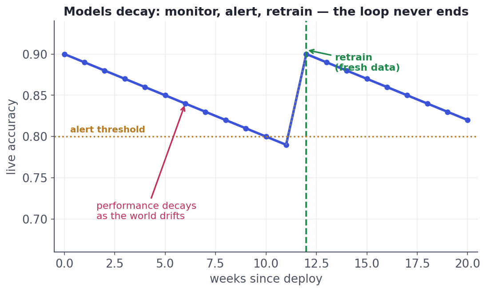

Monitoring & Drift
Models rot quietly — watch inputs and performance so you catch it.
Here's the truth that separates ML from ordinary software: your model gets worse over time even if you never touch it. Ordinary code does the same thing forever; a model was trained on a snapshot of a world that keeps changing — customers shift, competitors launch, fraud tactics evolve — so its accuracy silently decays. Deploying without monitoring is flying blind. This lesson is how you watch a live model's health and catch the rot before it costs you.
The world moves onWhy models decay: drift
Two kinds of change erode a deployed model:
- Data drift (covariate shift): the inputs change distribution. A new marketing campaign brings younger users than the model trained on; a sensor ages and reads differently. The relationship may still hold, but the model now sees inputs it wasn't trained for.
- Concept drift: the relationship between inputs and target changes. What predicted fraud last year doesn't this year because fraudsters adapted; buying behaviour shifts after a pandemic. The old mapping is simply wrong now.
Either way, a model that scored 0.90 at launch quietly slides — and nothing errors out to tell you.

Three layersWhat to monitor
You can't watch everything, so watch these, in order of how fast they warn you:
- Operational health — latency, error rate, uptime, throughput. (Is the service even up?)
- Input drift — are the incoming feature distributions still like training? This warns you early, before accuracy visibly drops, and needs no labels.
- Prediction & performance — are the output distributions stable, and — once true labels arrive — is accuracy holding? This is the ground truth, but often delayed (you may not learn who actually churned for weeks).
A common early-warning check compares a feature's live distribution to its training distribution. A simple, robust version is the standardized mean shift — how far the live mean has moved, in training standard deviations. Small = stable; large = investigate:
import numpy as np
train = np.array([50,52,48,51,49,53,47,50,52,48,51,49,50,52,48], dtype=float) # training feature
live = np.array([58,61,57,60,59,62,56,60,58,61], dtype=float) # recent production
shift = abs(live.mean() - train.mean()) / train.std()
print(f"train mean {train.mean():.1f}, live mean {live.mean():.1f}")
print(f"standardized shift: {shift:.2f} std -> {'DRIFT — investigate' if shift>1 else 'stable'}")train mean 50.0, live mean 59.2 standardized shift: 5.25 std -> DRIFT — investigate
The point of drift detection is to warn you before performance visibly craters — especially valuable because true labels are often delayed. Input-drift alarms need no labels at all, so they're your earliest signal. When an alarm fires, you investigate: is it a real world change (retrain), a data-pipeline bug (fix the pipeline), or just noise (tune the threshold)?
Keep the model freshClosing the loop: retraining
When monitoring signals meaningful decay, you retrain on recent data and redeploy — the feedback arrow that closes the ML lifecycle loop. Retraining can be scheduled (every week/month), triggered by a drift/performance alert, or continuous in fast-moving domains. Whichever, treat the new model like any release: validate it, compare it to the current one, and roll it out safely (canary / shadow) so a bad retrain can't silently make things worse.
Interactive labYour turn — flag drift with a standardized shift
Detect input drift: compute the standardized mean shift of the live sample versus training — |mean(live) − mean(train)| / std(train) — round to 2 decimals, and assign to answer. A value above ~1 std would trigger an investigation.
abs(live.mean() - train.mean()), divide by train.std(), cast to float, round 2 dp.answer = round(float(abs(live.mean() - train.mean()) / train.std()), 2)The live mean has jumped several training standard deviations — a large shift that should trigger investigation, likely well before accuracy visibly drops. Input-drift checks like this need no labels, which is why they're your earliest warning that the world has moved.
★ Key points to remember
- A deployed model decays even if untouched, because the world it was trained on keeps changing — deploying without monitoring is flying blind.
- Data drift = the inputs' distribution shifts; concept drift = the input→target relationship itself changes. Both silently erode accuracy.
- Monitor three layers: operational (latency/errors), input drift (early, label-free), and performance (ground truth, but often delayed).
- Input-drift alarms warn you before accuracy visibly drops — a simple check is the standardized shift in a feature's mean.
- Close the loop by retraining (scheduled / triggered / continuous) and rolling out the new model safely (canary/shadow).
◆ Practice▸
Show solution & reasoning
(1) Operational health — track latency, error rate, uptime, and job success; catches outright failures (the pipeline broke, the service is down) fastest. (2) Input drift — monitor the distributions of key features (traffic, price, seasonality inputs) versus the training baseline, alerting on large standardized shifts or PSI; catches a changing world early and without labels (a new region, a price change, a demand regime shift). (3) Prediction & performance — watch the forecast distribution for sudden changes, and once actuals arrive, track forecast error (MAE/MAPE) against a threshold; this is the ground truth but delayed, since you only learn true demand later. Wire alerts on each, and connect performance/drift alarms to a retraining trigger. The layered design gives you fast failure alerts, early drift warnings, and eventual truth — each covering the others' blind spots.
Show solution & reasoning
Because an alarm signals change, not necessarily model decay, and retraining on bad data can make things worse. Investigate the cause first: (a) a real world change (new user mix, genuine behaviour shift) → retraining on fresh data is the right fix; (b) a data-pipeline bug (a feature started arriving in different units, a broken join, a nulled column) → the fix is repairing the pipeline, and retraining on the corrupted data would bake in the error; (c) noise / a one-off event (a holiday spike, a transient outage) → the right response may be to wait or tune the alert threshold, not retrain. So the response to an alarm is diagnose, then act — and when you do retrain, validate and roll out the new model safely (shadow/canary) rather than trusting it blindly.
◎ Deep dive: PSI/KS drift measures, and shadow/canary/A-B model rollouts▸
Measuring drift, a bit more formally. Beyond a standardized mean shift, teams use distribution-distance measures: the Population Stability Index (PSI) (a rule-of-thumb: <0.1 stable, 0.1–0.25 moderate shift, >0.25 significant), the Kolmogorov–Smirnov statistic for continuous features, and KL/JS divergence. For predictions, you watch the output distribution and, when labels arrive, performance metrics. No single number is definitive — the art is choosing sensible features to watch, baselines to compare against, and thresholds that alert on real shifts without crying wolf. Start simple (a few key features, clear thresholds) and add sophistication as you learn your system's normal fluctuations.
Safe rollout: shadow, canary, and A/B for models. A retrained model shouldn't replace the old one in one risky switch. Shadow deployment runs the new model alongside the old on real traffic without acting on its predictions, so you can compare them safely. Canary routes a small slice of traffic to the new model and watches metrics before ramping up. And a true A/B test (the experimentation track, applied to models) measures whether the new model actually improves the business metric, not just offline accuracy. These let you catch a bad retrain — including one triggered by a drift alarm that turned out to be a pipeline bug — before it reaches all users. The lifecycle loop closes not with a reckless redeploy, but with a measured, reversible one.